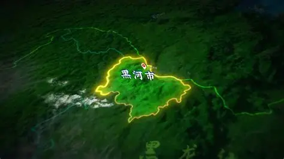
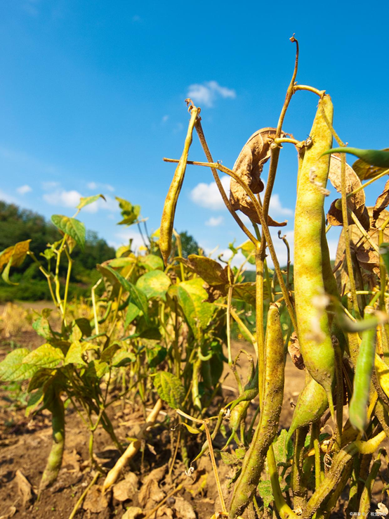

layout: true class: typo, typo-selection --- background-image: url(pictures/cover.jpg) .abs-layout.p-m.top-31.left-0.width-100.oc-bg-white.opacity-60.center[ # 大豆智慧农场设计方案 ] --- background-image: linear-gradient(135deg, #f0f4f8 0%, #e8f5e9 25%, #f1f8e9 50%, #fffde7 75%, #fafafa 100%) class: nord-light, center, middle .ri-map-pin-line.icon-top.nord11.font-xxl[] # .letter-spacing-20[智慧选址] <small>.letter-spacing-50[天时地利人和]</small> .rect.round-lg.nord11.width-70[ .rect.m-0.p-0[ .font-md[ .ri-landscape-line.icon-inline.nord11[] 黑土沃土 · .ri-sun-line.icon-inline.nord11[] 天时地利 · .ri-team-line.icon-inline.nord11[] 人和兴业 ] ] ] --- # 地理位置与交通优势 ### 黑龙江黑河市——世界黑土带核心区的战略选址 <div style="display: flex; gap: 25px; margin-top: 15px;"> <!-- 左侧：区位与选址 --> <div style="flex: 1; background: rgba(255,255,255,0.9); border-radius: 12px; padding: 20px; box-shadow: 0 4px 16px rgba(0,0,0,0.08);"> <h4 style="color: #2E5D18; margin-top: 0; border-bottom: 2px solid #8B6914; padding-bottom: 8px;"> <i class="ri-map-pin-2-line" style="color: #8B6914;"></i> 区位优势 </h4> <ul style="margin-bottom: 0; padding-left: 20px; font-size: 14px;"> <li style="margin-bottom: 10px;">位于<strong style="color: #8B6914;">黑龙江省北部</strong></li> <li style="margin-bottom: 10px;">小兴安岭向松嫩平原过渡带</li> <li style="margin-bottom: 0;">地处<strong style="color: #8B6914;">第三、四积温带</strong></li> </ul> </div> <!-- 中间：交通便利 --> <div style="flex: 1.2; background: rgba(255,255,255,0.9); border-radius: 12px; padding: 20px; box-shadow: 0 4px 16px rgba(0,0,0,0.08);"> <h4 style="color: #2E5D18; margin-top: 0; border-bottom: 2px solid #8B6914; padding-bottom: 8px;"> <i class="ri-road-map-line" style="color: #8B6914;"></i> 交通便利 </h4> <ul style="margin-bottom: 0; padding-left: 20px; font-size: 14px;"> <li style="margin-bottom: 8px;">距五大连池市区约<strong style="color: #8B6914;">60公里</strong></li> <li style="margin-bottom: 8px;">距北安市约<strong style="color: #8B6914;">80公里</strong></li> <li style="margin-bottom: 8px;">距黑河市区约<strong style="color: #8B6914;">150公里</strong></li> <li style="margin-bottom: 0;"><strong>202国道</strong>、<strong>北黑铁路</strong>连接省内主要城市</li> </ul> </div> <!-- 右侧：图片 --> <div style="flex: 0.9; display: flex; flex-direction: column; justify-content: center;"> <div style="border-radius: 12px; overflow: hidden; box-shadow: 0 8px 24px rgba(0,0,0,0.2);"> <p></p> </div> <small style="color: #666; display: block; margin-top: 8px; text-align: center;">黑河市地理位置示意图</small> </div> </div> <!-- 底部：选址价值 --> <div style="background: linear-gradient(135deg, rgba(46, 93, 24, 0.1) 0%, rgba(139, 105, 20, 0.1) 100%); border-radius: 12px; padding: 18px 20px; box-shadow: 0 4px 16px rgba(0,0,0,0.08); margin-top: 15px; border-left: 4px solid #8B6914;"> <h4 style="color: #2E5D18; margin: 0; font-size: 15px;"> <i class="ri-star-line" style="color: #8B6914;"></i> 选址价值：<strong style="color: #8B6914;">东北地区大豆主产区的核心地带</strong>——世界三大黑土带核心区，农业资源得天独厚 </h4> </div> --- # 得天独厚的自然条件 ### 寒温带季风气候与黑土资源的完美组合 <div style="display: flex; gap: 25px; margin-top: 15px;"> <!-- 左侧：土壤条件 --> <div style="flex: 1; background: rgba(255,255,255,0.9); border-radius: 12px; padding: 20px; box-shadow: 0 4px 16px rgba(0,0,0,0.08);"> <h4 style="color: #2E5D18; margin-top: 0; border-bottom: 2px solid #8B6914; padding-bottom: 8px;"> <i class="ri-landscape-line" style="color: #8B6914;"></i> 土壤条件 </h4> <ul style="margin-bottom: 0; padding-left: 20px; font-size: 14px;"> <li style="margin-bottom: 10px;"><strong>土壤类型</strong>：<strong style="color: #8B6914;">黑土（78%）</strong> + 黑钙土（20%）</li> <li style="margin-bottom: 10px;"><strong>黑土层厚度</strong>：30-100厘米，平均40厘米以上</li> <li style="margin-bottom: 10px;"><strong>有机质含量</strong>：<strong style="color: #8B6914;">4%-11%</strong>，核心区达7%</li> <li style="margin-bottom: 10px;"><strong>pH值</strong>：6.0-6.9，呈弱酸性</li> <li style="margin-bottom: 0;"><strong>养分丰富</strong>：氮0.25%-0.37%，磷0.17%-0.2%，钾0.46%-0.59%</li> </ul> </div> <!-- 右侧：气候条件 --> <div style="flex: 1; background: rgba(255,255,255,0.9); border-radius: 12px; padding: 20px; box-shadow: 0 4px 16px rgba(0,0,0,0.08);"> <h4 style="color: #2E5D18; margin-top: 0; border-bottom: 2px solid #8B6914; padding-bottom: 8px;"> <i class="ri-sun-line" style="color: #8B6914;"></i> 气候条件 </h4> <ul style="margin-bottom: 0; padding-left: 20px; font-size: 14px;"> <li style="margin-bottom: 10px;"><strong>年平均气温</strong>：-0.4℃至-1℃</li> <li style="margin-bottom: 10px;"><strong>年均日照</strong>：<strong style="color: #8B6914;">2568-2602小时</strong></li> <li style="margin-bottom: 10px;"><strong>无霜期</strong>：108-112天（5月-9月）</li> <li style="margin-bottom: 10px;"><strong>年均降水量</strong>：515-537毫米</li> <li style="margin-bottom: 0;"><strong>有效积温</strong>：约<strong style="color: #8B6914;">2100-2200℃</strong></li> </ul> </div> </div> <!-- 底部：水资源 --> <div style="background: rgba(255,255,255,0.9); border-radius: 12px; padding: 15px 20px; box-shadow: 0 4px 16px rgba(0,0,0,0.08); margin-top: 15px;"> <h4 style="color: #2E5D18; margin: 0; font-size: 15px;"> <i class="ri-water-flash-line" style="color: #8B6914;"></i> 水资源：南阳河、火烧沟属讷谟尔河水系，水质良好，地下水丰富 </h4> </div> --- # 农业基础与选址优势总结 ### 规模化现代农业的坚实基础 <div style="display: flex; gap: 25px; margin-top: 15px;"> <!-- 左侧：规模优势 --> <div style="flex: 1; background: rgba(255,255,255,0.9); border-radius: 12px; padding: 20px; box-shadow: 0 4px 16px rgba(0,0,0,0.08);"> <h4 style="color: #2E5D18; margin-top: 0; border-bottom: 2px solid #8B6914; padding-bottom: 8px;"> <i class="ri-expand-horizontal-line" style="color: #8B6914;"></i> 规模优势 </h4> <ul style="margin-bottom: 0; padding-left: 20px; font-size: 14px;"> <li style="margin-bottom: 10px;"><strong>辖区总面积</strong>：<strong style="color: #8B6914;">45.1万亩</strong></li> <li style="margin-bottom: 10px;"><strong>耕地面积</strong>：24.49万亩（约15238公顷）</li> <li style="margin-bottom: 0;"><strong>布局特点</strong>：优质耕地<strong style="color: #8B6914;">连片成方</strong>，规模效应显著</li> </ul> </div> <!-- 右侧：机械化水平 --> <div style="flex: 1; background: rgba(255,255,255,0.9); border-radius: 12px; padding: 20px; box-shadow: 0 4px 16px rgba(0,0,0,0.08);"> <h4 style="color: #2E5D18; margin-top: 0; border-bottom: 2px solid #8B6914; padding-bottom: 8px;"> <i class="ri-settings-4-line" style="color: #8B6914;"></i> 机械化水平 </h4> <ul style="margin-bottom: 0; padding-left: 20px; font-size: 14px;"> <li style="margin-bottom: 10px;"><strong>农机总动力</strong>：2.62万千瓦</li> <li style="margin-bottom: 10px;"><strong>综合机械化</strong>：<strong style="color: #8B6914;">98%以上</strong></li> <li style="margin-bottom: 0;"><strong>配套农机具</strong>：755台套，大中型拖拉机53台</li> </ul> </div> </div> <!-- 底部：选址优势总结 --> <div style="background: linear-gradient(135deg, rgba(46, 93, 24, 0.1) 0%, rgba(139, 105, 20, 0.1) 100%); border-radius: 12px; padding: 20px; box-shadow: 0 4px 16px rgba(0,0,0,0.08); margin-top: 15px; border-left: 4px solid #8B6914;"> <h4 style="color: #2E5D18; margin: 0 0 12px 0; border-bottom: 1px solid #C4A35A; padding-bottom: 8px;"> <i class="ri-check-double-line" style="color: #8B6914;"></i> 选址优势总结 </h4> <div style="display: flex; gap: 20px; font-size: 14px;"> <div style="flex: 1;"><strong style="color: #8B6914;">天时</strong>：寒温带气候，光照充足，昼夜温差大，雨热同季</div> <div style="flex: 1;"><strong style="color: #8B6914;">地利</strong>：世界三大黑土带核心区，黑土层深厚，有机质丰富</div> <div style="flex: 1;"><strong style="color: #8B6914;">人和</strong>：70年农垦历史，管理经验丰富，机械化率超99.8%</div> </div> </div> --- background-image: linear-gradient(135deg, #f0f4f8 0%, #e8f5e9 25%, #f1f8e9 50%, #fffde7 75%, #fafafa 100%) class: nord-light, center, middle .ri-seedling-line.icon-top.nord14.font-xxl[] # .letter-spacing-20[智慧品种] <small>.letter-spacing-50[良种适配科学选育]</small> .rect.round-lg.nord14.width-70[ .rect.m-0.p-0[ .font-md[ .ri-microscope-line.icon-inline.nord14[] 科学育种 · .ri-exchange-line.icon-inline.nord14[] 良种适配 · .ri-settings-line.icon-inline.nord14[] 智能选育 ] ] ] --- # 东北大豆品种的独特性 ### 适应短日照寒冷气候的专用品种体系 .float-right.width-25.pr-xs[ <div style="border-radius: 0px; overflow: hidden; box-shadow: 0 8px 24px rgba(0,0,0,0.2); margin-top: 10px; margin-right: 30px;"> <p></p> </div> ] - **东北地区独特性**： - 短日照、冬季寒冷、无霜期短 - 品种需选育早熟、极早熟、超早熟类型 - 明显区别于我国其他主要大豆产区 - **适合集约化种植的核心特征**： <div class="vue"> <div class="row q-gutter-xs justify-center" style="font-size:11px;"> <q-card flat bordered style="max-width: 160px;"> <q-card-section class="bg-green-1 q-pa-sm"> <div class="text-subtitle1 text-green-8">株型紧凑</div> <div class="text-caption text-green-6">适合密植</div> </q-card-section> <q-card-section class="q-pa-sm"> 植株收敛、叶片上举，节间短重心低，每亩2.5万株以上密度仍能保持高产 </q-card-section> </q-card> <q-card flat bordered style="max-width: 160px;"> <q-card-section class="bg-blue-1 q-pa-sm"> <div class="text-subtitle1 text-blue-8">茎秆坚韧</div> <div class="text-caption text-blue-6">高抗倒伏</div> </q-card-section> <q-card-section class="q-pa-sm"> 茎秆粗壮机械强度高，根系发达抓地力强 </q-card-section> </q-card> <q-card flat bordered style="max-width: 160px;"> <q-card-section class="bg-orange-1 q-pa-sm"> <div class="text-subtitle1 text-orange-8">结荚优良</div> <div class="text-caption text-orange-6">便于机收</div> </q-card-section> <q-card-section class="q-pa-sm"> 底荚高10-15cm，成熟后不易炸荚，结荚集中于中上部 </q-card-section> </q-card> <q-card flat bordered style="max-width: 160px;"> <q-card-section class="bg-purple-1 q-pa-sm"> <div class="text-subtitle1 text-purple-8">成熟一致</div> <div class="text-caption text-purple-6">脱水迅速</div> </q-card-section> <q-card-section class="q-pa-sm"> 田间群体成熟度一致，籽粒脱水快(≤18%)，降低破碎率与烘干成本 </q-card-section> </q-card> </div> </div> --- background-image: linear-gradient(135deg, rgba(245, 240, 225, 90%), rgba(245, 240, 225, 85%)), url(./pictures/黑河市.jpg) class: nord-light # 黑河市地理条件与品种要求 ### 第三、四积温带的品种适配策略 <div style="display: flex; gap: 25px; margin-top: 15px;"> <!-- 左侧：地理条件 --> <div style="flex: 1; background: rgba(255,255,255,0.85); border-radius: 12px; padding: 20px; box-shadow: 0 4px 16px rgba(0,0,0,0.1);"> <h4 style="color: #2E5D18; margin-top: 0; border-bottom: 2px solid #8B6914; padding-bottom: 8px;"> <i class="ri-map-pin-2-line" style="color: #8B6914;"></i> 黑河市地理条件 </h4> <ul style="margin-bottom: 0; padding-left: 20px;"> <li style="margin-bottom: 12px;"><strong>地理位置</strong>：地处黑龙江省北部，主要位于<strong style="color: #8B6914;">第三、四积温带</strong></li> <li style="margin-bottom: 12px;"><strong>气候特征</strong>：寒温带大陆性季风气候，夏季光照长、昼夜温差大，冬季寒冷漫长</li> <li style="margin-bottom: 0;"><strong>土壤条件</strong>：世界三大<strong style="color: #8B6914;">黑土带核心区</strong>，土壤肥沃</li> </ul> </div> <!-- 右侧：品种要求 --> <div style="flex: 1; background: rgba(255,255,255,0.85); border-radius: 12px; padding: 20px; box-shadow: 0 4px 16px rgba(0,0,0,0.1);"> <h4 style="color: #2E5D18; margin-top: 0; border-bottom: 2px solid #8B6914; padding-bottom: 8px;"> <i class="ri-seedling-line" style="color: #8B6914;"></i> 品种要求 </h4> <ul style="margin-bottom: 0; padding-left: 20px;"> <li style="margin-bottom: 12px;">适应<strong style="color: #8B6914;">中早熟类型</strong></li> <li style="margin-bottom: 12px;">耐低温、<strong style="color: #8B6914;">抗逆性强</strong></li> <li style="margin-bottom: 0;">适合<strong style="color: #8B6914;">机械化收获</strong></li> </ul> </div> </div> --- # 主推品种对比与选择 <div class="vue"> <div class="row q-gutter-xs justify-center" style="font-size:11px;"> <q-card flat bordered style="max-width: 180px;"> <img src="pictures/品种/合农71.jpg" style="height: 100px; object-fit: cover;"> <q-card-section class="q-pa-sm"> <div class="text-subtitle1 text-orange-8">合农71</div> <div class="text-caption text-grey-7">中熟(2600℃)</div> <div class="text-caption">高产广适，适合南部积温较高区域，北部风险大</div> </q-card-section> </q-card> <q-card flat bordered style="max-width: 180px;"> <img src="pictures/品种/绥农52.jpg" style="height: 100px; object-fit: cover;"> <q-card-section class="q-pa-sm"> <div class="text-subtitle1 text-blue-8">绥农52</div> <div class="text-caption text-grey-7">中熟(第二积温带)</div> <div class="text-caption">高蛋白，熟期偏晚，不适配黑河大部分地区</div> </q-card-section> </q-card> <q-card flat bordered style="max-width: 180px;"> <img src="pictures/品种/东生89.jpg" style="height: 100px; object-fit: cover;"> <q-card-section class="bg-green-1 q-pa-sm"> <div class="text-subtitle1 text-green-8">东生89 .nord14[★优选]</div> <div class="text-caption text-green-6">中早熟，矮秆耐密超高产</div> <div class="text-caption">熟期适配，增产潜力巨大，是优选品种</div> </q-card-section> </q-card> </div> <div class="row q-gutter-xs justify-center q-mt-xs" style="font-size:11px;"> <q-card flat bordered style="max-width: 180px;"> <img src="pictures/品种/黑科132.jpg" style="height: 100px; object-fit: cover;"> <q-card-section class="bg-blue-1 q-pa-sm"> <div class="text-subtitle1 text-blue-8">黑科132 .nord14[★理想]</div> <div class="text-caption text-blue-6">早熟(2250℃)，耐密稳产</div> <div class="text-caption">完全适配第三积温带，北部理想选择</div> </q-card-section> </q-card> <q-card flat bordered style="max-width: 180px;"> <img src="pictures/品种/脉育511.jpg" style="height: 100px; object-fit: cover;"> <q-card-section class="q-pa-sm"> <div class="text-subtitle1 text-purple-8">脉育511</div> <div class="text-caption text-grey-7">耐除草剂高油</div> <div class="text-caption">技术优势突出，需验证熟期</div> </q-card-section> </q-card> </div> </div> - **东生89**：凭借超高产潜力，适合作为**核心推广品种** - **黑科132**：以早熟和稳产特性，可作为**北部地区主栽品种** --- background-image: linear-gradient(135deg, #f0f4f8 0%, #e8f5e9 25%, #f1f8e9 50%, #fffde7 75%, #fafafa 100%) class: nord-light, center, middle .ri-plant-line.icon-top.nord12.font-xxl[] # .letter-spacing-20[智慧种植] <small>.letter-spacing-50[全程数字化管理]</small> .rect.round-lg.nord12.width-70[ .rect.m-0.p-0[ .font-md[ .ri-calendar-check-line.icon-inline.nord12[] 数据驱动 · .ri-drone-line.icon-inline.nord12[] 精准田管 · .ri-bug-line.icon-inline.nord12[] 智能监测 ] ] ] --- background-image: linear-gradient(135deg, rgba(245, 240, 225, 92%), rgba(245, 240, 225, 88%)), url(./pictures/无人机.png) class: nord-light # 播前准备与播种期（2-5月） ### 数据驱动的精准播种体系 <div style="display: flex; gap: 25px; margin-top: 15px;"> <!-- 左侧：播前准备 --> <div style="flex: 1; background: rgba(255,255,255,0.85); border-radius: 12px; padding: 20px; box-shadow: 0 4px 16px rgba(0,0,0,0.1);"> <h4 style="color: #2E5D18; margin-top: 0; border-bottom: 2px solid #8B6914; padding-bottom: 8px;"> <i class="ri-file-list-3-line" style="color: #8B6914;"></i> 播前准备（2-4月） </h4> <ul style="margin-bottom: 0; padding-left: 20px; font-size: 14px;"> <li style="margin-bottom: 8px;">土壤化验与<strong style="color: #8B6914;">电子档案</strong>建立</li> <li style="margin-bottom: 8px;">按土壤报告制定种子和施肥处方</li> <li style="margin-bottom: 8px;">设备检修：播种机、施肥机、<strong style="color: #8B6914;">无人机</strong>、传感器</li> <li style="margin-bottom: 8px;">物资准备：种子、基肥、农药、备件</li> <li style="margin-bottom: 0;">人员培训：机手与平台操作人员</li> </ul> </div> <!-- 中间：整地与基肥 --> <div style="flex: 1; background: rgba(255,255,255,0.85); border-radius: 12px; padding: 20px; box-shadow: 0 4px 16px rgba(0,0,0,0.1);"> <h4 style="color: #2E5D18; margin-top: 0; border-bottom: 2px solid #8B6914; padding-bottom: 8px;"> <i class="ri-truck-line" style="color: #8B6914;"></i> 整地与基肥（4月底-5月初） </h4> <ul style="margin-bottom: 0; padding-left: 20px; font-size: 14px;"> <li style="margin-bottom: 8px;">地表解冻后处方浅耕或免耕松土</li> <li style="margin-bottom: 8px;">修建排水沟和水闸</li> <li style="margin-bottom: 0;"><strong style="color: #8B6914;">北斗导航</strong>机具变量施肥，记录作业轨迹</li> </ul> </div> <!-- 右侧：播种 --> <div style="flex: 1; background: rgba(255,255,255,0.85); border-radius: 12px; padding: 20px; box-shadow: 0 4px 16px rgba(0,0,0,0.1);"> <h4 style="color: #2E5D18; margin-top: 0; border-bottom: 2px solid #8B6914; padding-bottom: 8px;"> <i class="ri-seedling-line" style="color: #8B6914;"></i> 播种（5月） </h4> <ul style="margin-bottom: 0; padding-left: 20px; font-size: 14px;"> <li style="margin-bottom: 8px;"><strong style="color: #8B6914;">RTK/北斗导航</strong>精量播种</li> <li style="margin-bottom: 8px;">种子包衣或生物拌种</li> <li style="margin-bottom: 0;">作业数据实时上传平台</li> </ul> </div> </div> --- background-image: linear-gradient(135deg, rgba(232, 245, 233, 92%), rgba(232, 245, 233, 88%)), url(./pictures/无人机喷洒.png) class: nord-light # 苗期与花期管理（5-7月） ### 无人机监测与变量施药的智能田管 <div style="display: flex; gap: 25px; margin-top: 15px;"> <!-- 左侧：出苗与首期监测 --> <div style="flex: 1; background: rgba(255,255,255,0.85); border-radius: 12px; padding: 20px; box-shadow: 0 4px 16px rgba(0,0,0,0.1);"> <h4 style="color: #2E5D18; margin-top: 0; border-bottom: 2px solid #8B6914; padding-bottom: 8px;"> <i class="ri-search-line" style="color: #8B6914;"></i> 出苗监测（播后1-2周） </h4> <ul style="margin-bottom: 0; padding-left: 20px; font-size: 14px;"> <li style="margin-bottom: 8px;"><strong style="color: #8B6914;">无人机+传感器</strong>巡查出苗率</li> <li style="margin-bottom: 8px;">缺苗斑块及时补播或灌溉</li> <li style="margin-bottom: 0;">早期病害小范围处理</li> </ul> </div> <!-- 中间：苗期管理 --> <div style="flex: 1; background: rgba(255,255,255,0.85); border-radius: 12px; padding: 20px; box-shadow: 0 4px 16px rgba(0,0,0,0.1);"> <h4 style="color: #2E5D18; margin-top: 0; border-bottom: 2px solid #8B6914; padding-bottom: 8px;"> <i class="ri-seed-line" style="color: #8B6914;"></i> 苗期管理（播后2-6周） </h4> <ul style="margin-bottom: 0; padding-left: 20px; font-size: 14px;"> <li style="margin-bottom: 8px;">处方点施第一次<strong style="color: #8B6914;">追肥</strong></li> <li style="margin-bottom: 8px;">机械中耕松土或除草</li> <li style="margin-bottom: 0;">每周<strong style="color: #8B6914;">无人机巡查</strong>，分区防治</li> </ul> </div> <!-- 右侧：开花结荚期 --> <div style="flex: 1; background: rgba(255,255,255,0.85); border-radius: 12px; padding: 20px; box-shadow: 0 4px 16px rgba(0,0,0,0.1);"> <h4 style="color: #2E5D18; margin-top: 0; border-bottom: 2px solid #8B6914; padding-bottom: 8px;"> <i class="ri-flower-line" style="color: #8B6914;"></i> 开花结荚期（6-7月） </h4> <ul style="margin-bottom: 0; padding-left: 20px; font-size: 14px;"> <li style="margin-bottom: 8px;">土壤墒情传感器<strong style="color: #8B6914;">指导灌溉</strong></li> <li style="margin-bottom: 8px;">遥感生成处方图定点喷药</li> <li style="margin-bottom: 0;">机械松土防倒伏</li> </ul> </div> </div> <!-- 底部：管理目标 --> <div style="background: linear-gradient(135deg, rgba(46, 93, 24, 0.15) 0%, rgba(139, 105, 20, 0.15) 100%); border-radius: 12px; padding: 18px 20px; box-shadow: 0 4px 16px rgba(0,0,0,0.1); margin-top: 15px; border-left: 4px solid #8B6914;"> <h4 style="color: #2E5D18; margin: 0; font-size: 15px;"> <i class="ri-focus-3-line" style="color: #8B6914;"></i> 管理目标：<strong style="color: #8B6914;">水够、病少、养分到位</strong>——保好结荚，奠定丰收基础 </h4> </div> --- background-image: linear-gradient(135deg, rgba(255, 248, 225, 92%), rgba(255, 243, 210, 88%)), url(./pictures/联合收割机.jpg) background-size: cover background-position: center class: nord-light # 收获与产后处理（8-9月） ### 精准收获与智能仓储 <!-- 第一行 --> <div style="display: flex; gap: 20px; margin-top: 10px;"> <!-- 左上：乳熟与促熟 --> <div style="flex: 1; background: rgba(255,255,255,0.9); border-radius: 12px; padding: 18px; box-shadow: 0 4px 16px rgba(0,0,0,0.12);"> <h4 style="color: #2E5D18; margin-top: 0; border-bottom: 2px solid #8B6914; padding-bottom: 8px; font-size: 15px;"> <i class="ri-drop-line" style="color: #8B6914;"></i> 乳熟与促熟（8月） </h4> <ul style="margin-bottom: 0; padding-left: 18px; font-size: 13px;"> <li style="margin-bottom: 6px;">逐步<strong style="color: #8B6914;">减少灌水</strong>促成熟</li> <li style="margin-bottom: 6px;">监测含水率与倒伏情况</li> <li style="margin-bottom: 0;">遇台风暴雨提前安排收割机具</li> </ul> </div> <!-- 右上：收割 --> <div style="flex: 1; background: rgba(255,255,255,0.9); border-radius: 12px; padding: 18px; box-shadow: 0 4px 16px rgba(0,0,0,0.12);"> <h4 style="color: #2E5D18; margin-top: 0; border-bottom: 2px solid #8B6914; padding-bottom: 8px; font-size: 15px;"> <i class="ri-sensor-line" style="color: #8B6914;"></i> 收割（8月底-9月） </h4> <ul style="margin-bottom: 0; padding-left: 18px; font-size: 13px;"> <li style="margin-bottom: 6px;">根据含水率和遥感判断<strong style="color: #8B6914;">最佳收割窗口</strong></li> <li style="margin-bottom: 6px;"><strong style="color: #8B6914;">北斗/RTK</strong>联合收割机分区网格化收割</li> <li style="margin-bottom: 6px;">调整机具参数减少破碎脱粒损失</li> <li style="margin-bottom: 0;">含水偏高的批次先送干燥再入仓</li> </ul> </div> </div> <!-- 第二行 --> <div style="display: flex; gap: 20px; margin-top: 20px;"> <!-- 左下：初筛与储存 --> <div style="flex: 1; background: rgba(255,255,255,0.9); border-radius: 12px; padding: 18px; box-shadow: 0 4px 16px rgba(0,0,0,0.12);"> <h4 style="color: #2E5D18; margin-top: 0; border-bottom: 2px solid #8B6914; padding-bottom: 8px; font-size: 15px;"> <i class="ri-database-2-line" style="color: #8B6914;"></i> 初筛、干燥与智能储存 </h4> <ul style="margin-bottom: 0; padding-left: 18px; font-size: 13px;"> <li style="margin-bottom: 6px;">场边初筛去泥杂、测含水</li> <li style="margin-bottom: 6px;">入库登记：批次、地块、含水、质检结果</li> <li style="margin-bottom: 0;">仓内温湿传感器<strong style="color: #8B6914;">全天监控</strong>，自动通风防霉变</li> </ul> </div> <!-- 右下：质量检验与售卖 --> <div style="flex: 1; background: rgba(255,255,255,0.9); border-radius: 12px; padding: 18px; box-shadow: 0 4px 16px rgba(0,0,0,0.12);"> <h4 style="color: #2E5D18; margin-top: 0; border-bottom: 2px solid #8B6914; padding-bottom: 8px; font-size: 15px;"> <i class="ri-shield-check-line" style="color: #8B6914;"></i> 质量检验与售卖（9月起） </h4> <ul style="margin-bottom: 0; padding-left: 18px; font-size: 13px;"> <li style="margin-bottom: 6px;">理化检验：<strong style="color: #8B6914;">蛋白、含油、杂质</strong>等</li> <li style="margin-bottom: 6px;">对接订单粮或加工厂</li> <li style="margin-bottom: 0;">生成<strong style="color: #8B6914;">溯源码</strong>，便于追溯与结算</li> </ul> </div> </div> --- background-image: linear-gradient(135deg, rgba(15, 23, 42, 88%), rgba(30, 41, 59, 85%)), url(./pictures/智慧检测.png) background-size: cover background-position: center class: nord-dark # 全程数字化与应急管理 ### 数据闭环与风险防控体系 <!-- 第一行 --> <div style="display: flex; gap: 20px; margin-top: 10px;"> <!-- 左上：并行数据监测 --> <div style="flex: 1; background: rgba(30, 41, 59, 0.85); border-radius: 12px; padding: 18px; box-shadow: 0 4px 16px rgba(0,0,0,0.3); border: 1px solid rgba(139, 105, 20, 0.3);"> <h4 style="color: #4ADE80; margin-top: 0; border-bottom: 2px solid #8B6914; padding-bottom: 8px; font-size: 15px;"> <i class="ri-radar-line" style="color: #8B6914;"></i> 并行数据监测（全季持续） </h4> <ul style="margin-bottom: 0; padding-left: 18px; font-size: 13px; color: #E2E8F0;"> <li style="margin-bottom: 6px;">每周/每10天<strong style="color: #4ADE80;">无人机+传感器</strong>巡查</li> <li style="margin-bottom: 6px;">数据实时上传平台</li> <li style="margin-bottom: 0;">大数据产业互联网驱动全产业链数字化升级</li> </ul> </div> <!-- 右上：设备与气象管理 --> <div style="flex: 1; background: rgba(30, 41, 59, 0.85); border-radius: 12px; padding: 18px; box-shadow: 0 4px 16px rgba(0,0,0,0.3); border: 1px solid rgba(139, 105, 20, 0.3);"> <h4 style="color: #4ADE80; margin-top: 0; border-bottom: 2px solid #8B6914; padding-bottom: 8px; font-size: 15px;"> <i class="ri-cloud-windy-line" style="color: #8B6914;"></i> 设备与气象管理 </h4> <ul style="margin-bottom: 0; padding-left: 18px; font-size: 13px; color: #E2E8F0;"> <li style="margin-bottom: 6px;">设备维护和备用机具保障</li> <li style="margin-bottom: 6px;">接入<strong style="color: #4ADE80;">气象预警系统</strong></li> <li style="margin-bottom: 0;">准备应急灌溉或排水方案</li> </ul> </div> </div> <!-- 第二行 --> <div style="display: flex; gap: 20px; margin-top: 20px;"> <!-- 左下：应急管理体系 --> <div style="flex: 1; background: rgba(30, 41, 59, 0.85); border-radius: 12px; padding: 18px; box-shadow: 0 4px 16px rgba(0,0,0,0.3); border: 1px solid rgba(139, 105, 20, 0.3);"> <h4 style="color: #4ADE80; margin-top: 0; border-bottom: 2px solid #8B6914; padding-bottom: 8px; font-size: 15px;"> <i class="ri-alarm-warning-line" style="color: #8B6914;"></i> 应急管理体系 </h4> <ul style="margin-bottom: 0; padding-left: 18px; font-size: 13px; color: #E2E8F0;"> <li style="margin-bottom: 6px;"><strong style="color: #4ADE80;">晚霜</strong>：顺延播种或局部防护</li> <li style="margin-bottom: 6px;"><strong style="color: #4ADE80;">干旱</strong>：应急灌溉启动</li> <li style="margin-bottom: 6px;"><strong style="color: #4ADE80;">虫害暴发</strong>：处方图快速响应</li> <li style="margin-bottom: 0;"><strong style="color: #4ADE80;">台风</strong>：提前收割安排</li> </ul> </div> <!-- 右下：智慧农业综合监测 --> <div style="flex: 1; background: rgba(30, 41, 59, 0.85); border-radius: 12px; padding: 18px; box-shadow: 0 4px 16px rgba(0,0,0,0.3); border: 1px solid rgba(139, 105, 20, 0.3);"> <h4 style="color: #4ADE80; margin-top: 0; border-bottom: 2px solid #8B6914; padding-bottom: 8px; font-size: 15px;"> <i class="ri-dashboard-3-line" style="color: #8B6914;"></i> 智慧农业综合监测与决策支持 </h4> <ul style="margin-bottom: 0; padding-left: 18px; font-size: 13px; color: #E2E8F0;"> <li style="margin-bottom: 6px;"><strong style="color: #4ADE80;">大屏界面</strong>实时监控</li> <li style="margin-bottom: 0;">智能分析与决策支持</li> </ul> </div> </div> --- background-image: linear-gradient(135deg, #f0f4f8 0%, #e8f5e9 25%, #f1f8e9 50%, #fffde7 75%, #fafafa 100%) class: nord-light, center, middle .ri-money-cny-circle-line.icon-top.nord13.font-xxl[] # .letter-spacing-20[智慧收益] <small>.letter-spacing-50[投资回报与可持续运营]</small> .rect.round-lg.nord13.width-70[ .rect.m-0.p-0[ .font-md[ .ri-bar-chart-box-line.icon-inline.nord13[] 降本增效 · .ri-line-chart-line.icon-inline.nord13[] 投资回报 · .ri-safe-line.icon-inline.nord13[] 稳健运营 ] ] ] --- # 智慧农场投资方案 <div style="margin-top: 20px;"> <table style="width: 100%; border-collapse: collapse; font-size: 15px; box-shadow: 0 4px 12px rgba(0,0,0,0.1); border-radius: 8px; overflow: hidden;"> <thead> <tr style="background: linear-gradient(135deg, #1A4008 0%, #2E5D18 100%);"> <th colspan="4" style="padding: 18px; text-align: center; color: #8B6914; font-weight: bold; font-size: 18px; text-shadow: 2px 2px 4px rgba(0,0,0,0.5);"> 1000亩东北春大豆智慧农场 · 项目总投资 372.8万元 </th> </tr> <tr style="background: #F9F7F0;"> <th style="padding: 14px; text-align: center; border-bottom: 3px solid #8B6914; color: #3D2914; width: 20%; font-weight: bold; font-size: 15px;">投资类别</th> <th style="padding: 14px; text-align: center; border-bottom: 3px solid #8B6914; color: #3D2914; width: 18%; font-weight: bold; font-size: 15px;">金额（万元）</th> <th style="padding: 14px; text-align: center; border-bottom: 3px solid #8B6914; color: #3D2914; width: 15%; font-weight: bold; font-size: 15px;">占比</th> <th style="padding: 14px; text-align: left; border-bottom: 3px solid #8B6914; color: #3D2914; font-weight: bold; font-size: 15px;">主要设备/内容</th> </tr> </thead> <tbody> <tr style="background: #FEFDF8;"> <td style="padding: 14px; border-bottom: 2px solid #E8E0D0; text-align: center; font-weight: bold; color: #8B6914; font-size: 15px;">智能农机</td> <td style="padding: 14px; border-bottom: 2px solid #E8E0D0; text-align: right; font-weight: bold; color: #2E5D18; font-size: 16px;">135.0</td> <td style="padding: 14px; border-bottom: 2px solid #E8E0D0; text-align: center; color: #5D4E37; font-weight: bold;">36.2%</td> <td style="padding: 14px; border-bottom: 2px solid #E8E0D0; color: #4A4035; line-height: 1.5;">播种机2台 + 收割机1台 + 拖拉机1台 + 运输车</td> </tr> <tr style="background: #F9F7F0;"> <td style="padding: 14px; border-bottom: 2px solid #E8E0D0; text-align: center; font-weight: bold; color: #8B6914; font-size: 15px;">无人机植保</td> <td style="padding: 14px; border-bottom: 2px solid #E8E0D0; text-align: right; font-weight: bold; color: #2E5D18; font-size: 16px;">32.0</td> <td style="padding: 14px; border-bottom: 2px solid #E8E0D0; text-align: center; color: #5D4E37; font-weight: bold;">8.6%</td> <td style="padding: 14px; border-bottom: 2px solid #E8E0D0; color: #4A4035; line-height: 1.5;">极飞P150无人机2架 + 智能喷药机1台</td> </tr> <tr style="background: #FEFDF8;"> <td style="padding: 14px; border-bottom: 2px solid #E8E0D0; text-align: center; font-weight: bold; color: #8B6914; font-size: 15px;">监测感知</td> <td style="padding: 14px; border-bottom: 2px solid #E8E0D0; text-align: right; font-weight: bold; color: #2E5D18; font-size: 16px;">22.0</td> <td style="padding: 14px; border-bottom: 2px solid #E8E0D0; text-align: center; color: #5D4E37; font-weight: bold;">5.9%</td> <td style="padding: 14px; border-bottom: 2px solid #E8E0D0; color: #4A4035; line-height: 1.5;">土壤传感器20套 + 气象站2套 + 监控10套</td> </tr> <tr style="background: #F9F7F0;"> <td style="padding: 14px; border-bottom: 2px solid #E8E0D0; text-align: center; font-weight: bold; color: #8B6914; font-size: 15px;">基础设施</td> <td style="padding: 14px; border-bottom: 2px solid #E8E0D0; text-align: right; font-weight: bold; color: #2E5D18; font-size: 16px;">116.0</td> <td style="padding: 14px; border-bottom: 2px solid #E8E0D0; text-align: center; color: #5D4E37; font-weight: bold;">31.1%</td> <td style="padding: 14px; border-bottom: 2px solid #E8E0D0; color: #4A4035; line-height: 1.5;">智能灌溉控制器50套 + 仓储机库管网</td> </tr> <tr style="background: #FEFDF8;"> <td style="padding: 14px; border-bottom: 3px solid #C4A35A; text-align: center; font-weight: bold; color: #8B6914; font-size: 15px;">软件及实施</td> <td style="padding: 14px; border-bottom: 3px solid #C4A35A; text-align: right; font-weight: bold; color: #2E5D18; font-size: 16px;">67.8</td> <td style="padding: 14px; border-bottom: 3px solid #C4A35A; text-align: center; color: #5D4E37; font-weight: bold;">18.2%</td> <td style="padding: 14px; border-bottom: 3px solid #C4A35A; color: #4A4035; line-height: 1.5;">农场管理平台 + 设计培训 + 预备费</td> </tr> </tbody> </table> </div> --- # 智慧农场投资方案 ### 配套资源与人员配置 <div style="display: flex; justify-content: space-around; align-items: center; margin-top: 20px;"> <!-- 种子 --> <div style="text-align: center; padding: 20px;"> <div style="font-size: 48px; color: #5D4037; margin-bottom: 10px;"> <i class="ri-disc-line"></i> </div> <div style="font-size: 28px; font-weight: bold; color: #2E7D32;">6-8吨</div> <div style="font-size: 14px; color: #666;">种子用量</div> <div style="font-size: 12px; color: #999;">6-8公斤/亩 × 1000亩</div> </div> <!-- 土地 --> <div style="text-align: center; padding: 20px;"> <div style="font-size: 48px; color: #795548; margin-bottom: 10px;"> <i class="ri-landscape-line"></i> </div> <div style="font-size: 28px; font-weight: bold; color: #E65100;">55万/年</div> <div style="font-size: 14px; color: #666;">土地租金</div> <div style="font-size: 12px; color: #999;">550元/亩 × 1000亩</div> </div> <!-- 人员 --> <div style="text-align: center; padding: 20px;"> <div style="font-size: 48px; color: #1565C0; margin-bottom: 10px;"> <i class="ri-team-line"></i> </div> <div style="font-size: 28px; font-weight: bold; color: #0D47A1;">5人团队</div> <div style="font-size: 14px; color: #666;">人员配置</div> <div style="font-size: 12px; color: #999;">精简高效</div> </div> </div> <!-- 人员图标展示 --> <div style="display: flex; justify-content: center; align-items: center; margin-top: 30px; gap: 30px;"> <div style="text-align: center;"> <div style="width: 60px; height: 60px; background: linear-gradient(135deg, #667eea 0%, #764ba2 100%); border-radius: 50%; display: flex; align-items: center; justify-content: center; margin: 0 auto;"> <i class="ri-user-star-line" style="font-size: 28px; color: white;"></i> </div> <div style="font-size: 12px; margin-top: 8px;">农场经理</div> </div> <div style="text-align: center;"> <div style="width: 60px; height: 60px; background: linear-gradient(135deg, #f093fb 0%, #f5576c 100%); border-radius: 50%; display: flex; align-items: center; justify-content: center; margin: 0 auto;"> <i class="ri-computer-line" style="font-size: 28px; color: white;"></i> </div> <div style="font-size: 12px; margin-top: 8px;">技术专员</div> </div> <div style="text-align: center;"> <div style="width: 60px; height: 60px; background: linear-gradient(135deg, #4facfe 0%, #00f2fe 100%); border-radius: 50%; display: flex; align-items: center; justify-content: center; margin: 0 auto;"> <i class="ri-flight-takeoff-line" style="font-size: 28px; color: white;"></i> </div> <div style="font-size: 12px; margin-top: 8px;">无人机手</div> </div> <div style="text-align: center;"> <div style="width: 60px; height: 60px; background: linear-gradient(135deg, #43e97b 0%, #38f9d7 100%); border-radius: 50%; display: flex; align-items: center; justify-content: center; margin: 0 auto;"> <i class="ri-truck-line" style="font-size: 28px; color: white;"></i> </div> <div style="font-size: 12px; margin-top: 8px;">农机手</div> </div> <div style="text-align: center;"> <div style="width: 60px; height: 60px; background: linear-gradient(135deg, #fa709a 0%, #fee140 100%); border-radius: 50%; display: flex; align-items: center; justify-content: center; margin: 0 auto;"> <i class="ri-walk-line" style="font-size: 28px; color: white;"></i> </div> <div style="font-size: 12px; margin-top: 8px;">田间巡查</div> </div> </div> --- # 传统种植 vs 智慧农场效益对比 <div style="display: flex; flex-direction: column; gap: 15px;"> <!-- 成本对比 --> <div> <svg viewBox="0 0 900 260" style="width: 100%; max-width: 900px; margin: 0 auto; display: block;"> <!-- 背景 --> <rect x="0" y="0" width="900" height="260" fill="#fafafa" rx="8"/> <!-- 标题 --> <text x="450" y="22" text-anchor="middle" font-size="14" font-weight="bold" fill="#333">成本对比：140.5万 → 103万（-26.7%）</text> <!-- 图例 --> <rect x="320" y="32" width="12" height="12" fill="#FF6B6B"/> <text x="340" y="42" font-size="10" fill="#666">传统种植</text> <rect x="430" y="32" width="12" height="12" fill="#4ECDC4"/> <text x="450" y="42" font-size="10" fill="#666">智慧农场</text> <!-- 水平网格线 --> <line x1="70" y1="210" x2="850" y2="210" stroke="#eee" stroke-width="1"/> <line x1="70" y1="170" x2="850" y2="170" stroke="#eee" stroke-width="1"/> <line x1="70" y1="130" x2="850" y2="130" stroke="#eee" stroke-width="1"/> <line x1="70" y1="90" x2="850" y2="90" stroke="#eee" stroke-width="1"/> <!-- 地租 --> <rect x="80" y="115" width="28" height="95" fill="#FF6B6B" rx="2"/> <rect x="112" y="115" width="28" height="95" fill="#4ECDC4" rx="2"/> <text x="110" y="225" text-anchor="middle" font-size="9" fill="#666">地租</text> <text x="94" y="108" text-anchor="middle" font-size="8" fill="#FF6B6B">55</text> <text x="126" y="108" text-anchor="middle" font-size="8" fill="#4ECDC4">55</text> <!-- 农资 --> <rect x="160" y="158" width="28" height="52" fill="#FF6B6B" rx="2"/> <rect x="192" y="168" width="28" height="42" fill="#4ECDC4" rx="2"/> <text x="190" y="225" text-anchor="middle" font-size="9" fill="#666">农资</text> <text x="174" y="151" text-anchor="middle" font-size="8" fill="#FF6B6B">25.5</text> <text x="206" y="161" text-anchor="middle" font-size="8" fill="#4ECDC4">21</text> <!-- 机械 --> <rect x="240" y="170" width="28" height="40" fill="#FF6B6B" rx="2"/> <rect x="272" y="178" width="28" height="32" fill="#4ECDC4" rx="2"/> <text x="270" y="225" text-anchor="middle" font-size="9" fill="#666">机械</text> <text x="254" y="163" text-anchor="middle" font-size="8" fill="#FF6B6B">15</text> <text x="286" y="171" text-anchor="middle" font-size="8" fill="#4ECDC4">12</text> <!-- 人工 --> <rect x="320" y="150" width="28" height="60" fill="#FF6B6B" rx="2"/> <rect x="352" y="186" width="28" height="24" fill="#4ECDC4" rx="2"/> <text x="350" y="225" text-anchor="middle" font-size="9" fill="#666">人工</text> <text x="334" y="143" text-anchor="middle" font-size="8" fill="#FF6B6B">20</text> <text x="366" y="179" text-anchor="middle" font-size="8" fill="#4ECDC4">8</text> <!-- 水电 --> <rect x="400" y="190" width="28" height="20" fill="#FF6B6B" rx="2"/> <rect x="432" y="194" width="28" height="16" fill="#4ECDC4" rx="2"/> <text x="430" y="225" text-anchor="middle" font-size="9" fill="#666">水电</text> <!-- 管理 --> <rect x="480" y="150" width="28" height="60" fill="#FF6B6B" rx="2"/> <rect x="512" y="200" width="28" height="10" fill="#4ECDC4" rx="2"/> <text x="510" y="225" text-anchor="middle" font-size="9" fill="#666">管理</text> <text x="494" y="143" text-anchor="middle" font-size="8" fill="#FF6B6B">20</text> <text x="526" y="193" text-anchor="middle" font-size="8" fill="#4ECDC4">3</text> <!-- 总计 --> <rect x="600" y="108" width="35" height="102" fill="#FF6B6B" rx="3" opacity="0.8"/> <rect x="645" y="138" width="35" height="72" fill="#4ECDC4" rx="3" opacity="0.8"/> <text x="640" y="225" text-anchor="middle" font-size="10" font-weight="bold" fill="#333">总计</text> <text x="617" y="100" text-anchor="middle" font-size="9" fill="#FF6B6B">140.5</text> <text x="662" y="130" text-anchor="middle" font-size="9" fill="#4ECDC4">103</text> <!-- 节省 --> <text x="740" y="170" text-anchor="middle" font-size="11" fill="#27ae60" font-weight="bold">↓37.5万</text> </svg> </div> <!-- 收入对比 --> <div style="display: flex; justify-content: space-between; align-items: flex-start; gap: 20px;"> <!-- 左侧：收入对比 --> <div style="flex: 1;"> <svg viewBox="0 0 420 320" style="width: 100%; max-width: 420px;"> <!-- 背景 --> <rect x="0" y="0" width="420" height="320" fill="#f8f9fa" rx="8"/> <!-- 标题 --> <text x="210" y="25" text-anchor="middle" font-size="14" font-weight="bold" fill="#333">年收入对比（万元）</text> <text x="210" y="42" text-anchor="middle" font-size="11" fill="#666">132.2万 → 159.1万 (+20.3%)</text> <!-- 收入构成图例 --> <rect x="70" y="55" width="12" height="12" fill="#4CAF50"/> <text x="88" y="65" font-size="10" fill="#666">大豆销售</text> <rect x="150" y="55" width="12" height="12" fill="#FF9800"/> <text x="168" y="65" font-size="10" fill="#666">补贴收入</text> <rect x="230" y="55" width="12" height="12" fill="#2196F3"/> <text x="248" y="65" font-size="10" fill="#666">副产品</text> <!-- Y轴刻度 --> <line x1="70" y1="80" x2="70" y2="260" stroke="#ddd" stroke-width="1"/> <text x="65" y="260" text-anchor="end" font-size="9" fill="#999">0</text> <text x="65" y="210" text-anchor="end" font-size="9" fill="#999">50</text> <text x="65" y="160" text-anchor="end" font-size="9" fill="#999">100</text> <text x="65" y="110" text-anchor="end" font-size="9" fill="#999">150</text> <!-- 水平网格线 --> <line x1="70" y1="210" x2="350" y2="210" stroke="#eee" stroke-width="1"/> <line x1="70" y1="160" x2="350" y2="160" stroke="#eee" stroke-width="1"/> <line x1="70" y1="110" x2="350" y2="110" stroke="#eee" stroke-width="1"/> <!-- 传统种植 - 堆叠柱状图 (从底部向上堆叠) --> <!-- 总计132.2 = 大豆95.6 + 补贴36.6 + 副产品0 --> <!-- 大豆销售 (底部) --> <rect x="90" y="167.6" width="60" height="92.4" fill="#4CAF50" rx="3"/> <text x="120" y="215" text-anchor="middle" font-size="9" fill="white">95.6</text> <!-- 补贴收入 (中间) --> <rect x="90" y="127.2" width="60" height="40.4" fill="#FF9800" rx="3"/> <text x="120" y="150" text-anchor="middle" font-size="9" fill="white">36.6</text> <!-- 标签 --> <text x="120" y="280" text-anchor="middle" font-size="12" font-weight="bold" fill="#FF6B6B">传统种植</text> <text x="120" y="295" text-anchor="middle" font-size="11" fill="#FF6B6B">132.2万</text> <!-- 智慧农场 - 堆叠柱状图 --> <!-- 总计159.1 = 大豆117.5 + 补贴36.6 + 副产品5.0 --> <!-- 大豆销售 (底部) --> <rect x="200" y="142.5" width="60" height="117.5" fill="#4CAF50" rx="3"/> <text x="230" y="205" text-anchor="middle" font-size="9" fill="white">117.5</text> <!-- 补贴收入 (中间) --> <rect x="200" y="102.3" width="60" height="40.2" fill="#FF9800" rx="3"/> <text x="230" y="125" text-anchor="middle" font-size="9" fill="white">36.6</text> <!-- 副产品 (顶部) --> <rect x="200" y="87.3" width="60" height="15" fill="#2196F3" rx="3"/> <text x="230" y="97" text-anchor="middle" font-size="8" fill="white">5.0</text> <!-- 标签 --> <text x="230" y="280" text-anchor="middle" font-size="12" font-weight="bold" fill="#4ECDC4">智慧农场</text> <text x="230" y="295" text-anchor="middle" font-size="11" fill="#4ECDC4">159.1万</text> <!-- 增长箭头 --> <path d="M 165 140 L 185 130" stroke="#27ae60" stroke-width="2" fill="none" marker-end="url(#arrowhead)"/> <defs> <marker id="arrowhead" markerWidth="10" markerHeight="7" refX="9" refY="3.5" orient="auto"> <polygon points="0 0, 10 3.5, 0 7" fill="#27ae60"/> </marker> </defs> <text x="185" y="120" text-anchor="middle" font-size="10" fill="#27ae60" font-weight="bold">+20.3%</text> </svg> </div> <!-- 右侧：利润对比 --> <div style="flex: 1;"> <svg viewBox="0 0 420 320" style="width: 100%; max-width: 420px;"> <!-- 背景 --> <rect x="0" y="0" width="420" height="320" fill="#f8f9fa" rx="8"/> <!-- 标题 --> <text x="210" y="25" text-anchor="middle" font-size="14" font-weight="bold" fill="#333">利润对比（万元/年）</text> <text x="210" y="42" text-anchor="middle" font-size="11" fill="#666">从亏损到盈利的转变</text> <!-- 中心线（盈亏平衡点） --> <line x1="50" y1="170" x2="370" y2="170" stroke="#666" stroke-width="2" stroke-dasharray="5,5"/> <text x="375" y="174" font-size="9" fill="#666">盈亏平衡</text> <!-- 传统种植 - 亏损 --> <text x="130" y="80" text-anchor="middle" font-size="12" font-weight="bold" fill="#e74c3c">传统种植</text> <rect x="80" y="170" width="100" height="60" fill="#e74c3c" rx="5" opacity="0.8"/> <text x="130" y="205" text-anchor="middle" font-size="14" font-weight="bold" fill="white">-8.3万</text> <text x="130" y="245" text-anchor="middle" font-size="10" fill="#e74c3c">亏损状态</text> <!-- 箭头 --> <path d="M 200 170 Q 210 100 230 130" stroke="#3498db" stroke-width="3" fill="none" marker-end="url(#arrowhead2)"/> <defs> <marker id="arrowhead2" markerWidth="10" markerHeight="7" refX="9" refY="3.5" orient="auto"> <polygon points="0 0, 10 3.5, 0 7" fill="#3498db"/> </marker> </defs> <text x="215" y="110" text-anchor="middle" font-size="11" fill="#3498db" font-weight="bold">智慧升级</text> <!-- 智慧农场 - 盈利 --> <text x="290" y="80" text-anchor="middle" font-size="12" font-weight="bold" fill="#27ae60">智慧农场</text> <rect x="240" y="110" width="100" height="60" fill="#27ae60" rx="5" opacity="0.8"/> <text x="290" y="145" text-anchor="middle" font-size="14" font-weight="bold" fill="white">+16.1万</text> <text x="290" y="95" text-anchor="middle" font-size="10" fill="#27ae60">盈利状态</text> <!-- 现金流 --> <rect x="110" y="260" width="200" height="40" fill="#3498db" rx="5" opacity="0.9"/> <text x="210" y="278" text-anchor="middle" font-size="11" fill="white">年经营现金流</text> <text x="210" y="293" text-anchor="middle" font-size="14" font-weight="bold" fill="white">56.1万元</text> <!-- 改善幅度 --> <text x="210" y="200" text-anchor="middle" font-size="12" fill="#27ae60" font-weight="bold">扭亏为盈 +24.4万</text> </svg> </div> </div> </div> --- # 投资回报与财务评价 <div style="display: flex; gap: 20px; margin-top: 20px;"> <!-- 左侧：核心财务指标 --> <div style="flex: 1;"> <table style="width: 100%; border-collapse: collapse; font-size: 14px;"> <thead> <tr style="background: linear-gradient(135deg, #667eea 0%, #764ba2 100%);"> <th colspan="2" style="padding: 12px; text-align: center; color: white; font-weight: bold; border-radius: 8px 8px 0 0;">核心财务指标</th> </tr> </thead> <tbody> <tr style="background: #f8f9fa;"> <td style="padding: 10px; border-bottom: 1px solid #eee; color: #666;">项目总投资</td> <td style="padding: 10px; border-bottom: 1px solid #eee; text-align: right; font-weight: bold; color: #333;">372.8万元</td> </tr> <tr style="background: white;"> <td style="padding: 10px; border-bottom: 1px solid #eee; color: #666;">年净利润</td> <td style="padding: 10px; border-bottom: 1px solid #eee; text-align: right; font-weight: bold; color: #27ae60;">+16.1万元</td> </tr> <tr style="background: #f8f9fa;"> <td style="padding: 10px; border-bottom: 1px solid #eee; color: #666;">年经营现金流</td> <td style="padding: 10px; border-bottom: 1px solid #eee; text-align: right; font-weight: bold; color: #3498db;">56.1万元</td> </tr> <tr style="background: white;"> <td style="padding: 10px; border-bottom: 1px solid #eee; color: #666;">静态投资回收期</td> <td style="padding: 10px; border-bottom: 1px solid #eee; text-align: right; font-weight: bold; color: #333;">6.6年</td> </tr> <tr style="background: #f8f9fa;"> <td style="padding: 10px; border-bottom: 1px solid #eee; color: #666;">内部收益率IRR</td> <td style="padding: 10px; border-bottom: 1px solid #eee; text-align: right; font-weight: bold; color: #e74c3c;">14.8%</td> </tr> <tr style="background: white;"> <td style="padding: 10px; color: #666;">净现值NPV（i=8%）</td> <td style="padding: 10px; text-align: right; font-weight: bold; color: #27ae60;">+168万元</td> </tr> </tbody> </table> </div> <!-- 右侧：长期收益 --> <div style="flex: 1;"> <table style="width: 100%; border-collapse: collapse; font-size: 14px;"> <thead> <tr style="background: linear-gradient(135deg, #11998e 0%, #38ef7d 100%);"> <th colspan="2" style="padding: 12px; text-align: center; color: white; font-weight: bold; border-radius: 8px 8px 0 0;">15年长期收益预测</th> </tr> </thead> <tbody> <tr style="background: #f8f9fa;"> <td style="padding: 10px; border-bottom: 1px solid #eee; color: #666;">累计净利润</td> <td style="padding: 10px; border-bottom: 1px solid #eee; text-align: right; font-weight: bold; color: #27ae60;">241.5万元</td> </tr> <tr style="background: white;"> <td style="padding: 10px; border-bottom: 1px solid #eee; color: #666;">累计经营现金流</td> <td style="padding: 10px; border-bottom: 1px solid #eee; text-align: right; font-weight: bold; color: #3498db;">841.5万元</td> </tr> <tr style="background: #f8f9fa;"> <td style="padding: 10px; border-bottom: 1px solid #eee; color: #666;">现金流转正年份</td> <td style="padding: 10px; border-bottom: 1px solid #eee; text-align: right; font-weight: bold; color: #333;">第7年</td> </tr> <tr style="background: white;"> <td style="padding: 10px; border-bottom: 1px solid #eee; color: #666;">投资回报倍数</td> <td style="padding: 10px; border-bottom: 1px solid #eee; text-align: right; font-weight: bold; color: #e74c3c;">2.26倍</td> </tr> <tr style="background: #f8f9fa;"> <td style="padding: 10px; border-bottom: 1px solid #eee; color: #666;">年均收益率</td> <td style="padding: 10px; border-bottom: 1px solid #eee; text-align: right; font-weight: bold; color: #333;">15.1%</td> </tr> <tr style="background: white;"> <td style="padding: 10px; color: #666;">项目可行性</td> <td style="padding: 10px; text-align: right; font-weight: bold; color: #27ae60;">显著可行 ✓</td> </tr> </tbody> </table> </div> </div> <!-- IRR对比可视化 --> <div style="margin-top: 25px; text-align: center;"> <svg viewBox="0 0 800 120" style="width: 100%; max-width: 800px;"> <!-- 背景 --> <rect x="0" y="0" width="800" height="120" fill="#f8f9fa" rx="8"/> <!-- 标题 --> <text x="400" y="25" text-anchor="middle" font-size="14" font-weight="bold" fill="#333">IRR对比（农业基准 vs 本项目）</text> <!-- 农业基准 --> <text x="150" y="55" text-anchor="middle" font-size="11" fill="#666">农业基准</text> <rect x="100" y="65" width="100" height="30" fill="#bdc3c7" rx="3"/> <text x="150" y="85" text-anchor="middle" font-size="12" font-weight="bold" fill="white">8%</text> <!-- 本项目 --> <text x="350" y="55" text-anchor="middle" font-size="11" fill="#666" font-weight="bold">本项目</text> <rect x="260" y="65" width="180" height="30" fill="#27ae60" rx="3"/> <text x="350" y="85" text-anchor="middle" font-size="14" font-weight="bold" fill="white">14.8%</text> <!-- 优势标注 --> <text x="580" y="75" text-anchor="middle" font-size="13" fill="#27ae60" font-weight="bold">优于基准 85%</text> <text x="580" y="95" text-anchor="middle" font-size="11" fill="#666">显著可行项目</text> <!-- 箭头 --> <path d="M 450 80 L 520 80" stroke="#27ae60" stroke-width="2" fill="none" marker-end="url(#arrowhead3)"/> <defs> <marker id="arrowhead3" markerWidth="10" markerHeight="7" refX="9" refY="3.5" orient="auto"> <polygon points="0 0, 10 3.5, 0 7" fill="#27ae60"/> </marker> </defs> </svg> </div> --- background-image: linear-gradient(135deg, #f0f4f8 0%, #e8f5e9 25%, #f1f8e9 50%, #fffde7 75%, #fafafa 100%) class: nord-light, center, middle .ri-government-line.icon-top.nord15.font-xxl[] # .letter-spacing-20[智慧政策] <small>.letter-spacing-50[国家战略到地方实践]</small> .rect.round-lg.nord15.width-70[ .rect.m-0.p-0[ .font-md[ .ri-global-line.icon-inline.nord15[] 国家战略 · .ri-map-pin-2-line.icon-inline.nord15[] 省级试点 · .ri-file-shield-line.icon-inline.nord15[] 黑土地保护 ] ] ] --- background-image: linear-gradient(135deg, #1e3a5f 0%, #2d5a3d 100%) class: nord-dark # 政策保障体系 ### 从国家战略到地方实施的全方位支撑 <div style="display: flex; gap: 25px; margin-top: 15px;"> <!-- 国家政策 --> <div style="flex: 1; background: rgba(255,255,255,0.95); border-radius: 16px; padding: 25px; box-shadow: 0 8px 32px rgba(0,0,0,0.2); border-top: 4px solid #DC2626;"> <div style="display: flex; align-items: center; gap: 10px; margin-bottom: 15px;"> <i class="ri-government-line" style="font-size: 28px; color: #DC2626;"></i> <h3 style="margin: 0; color: #1e3a5f; font-size: 18px;">国家战略层面</h3> </div> <div style="background: rgba(220, 38, 38, 0.1); border-radius: 8px; padding: 12px; margin-bottom: 12px;"> <div style="font-size: 24px; font-weight: bold; color: #DC2626;">20项</div> <div style="font-size: 12px; color: #374151;">智慧农业标准</div> </div> <ul style="font-size: 13px; padding-left: 18px; margin: 0;"> <li style="color: #000;">104项关键技术突破</li> <li style="color: #000;">62项整机装备研发</li> <li style="color: #000;"><strong style="color: #DC2626;">"大豆智能设计育种"</strong>为主推技术</li> <li style="color: #000;">16个大田智慧农场典型案例</li> </ul> </div> <!-- 省级政策 --> <div style="flex: 1; background: rgba(255,255,255,0.95); border-radius: 16px; padding: 25px; box-shadow: 0 8px 32px rgba(0,0,0,0.2); border-top: 4px solid #059669;"> <div style="display: flex; align-items: center; gap: 10px; margin-bottom: 15px;"> <i class="ri-map-2-line" style="font-size: 28px; color: #059669;"></i> <h3 style="margin: 0; color: #1e3a5f; font-size: 18px;">黑龙江省政策</h3> </div> <div style="background: rgba(5, 150, 105, 0.1); border-radius: 8px; padding: 12px; margin-bottom: 12px;"> <div style="font-size: 14px; font-weight: bold; color: #059669;">"人工智能+"行动</div> <div style="font-size: 12px; color: #374151;">智慧农业实施方案</div> </div> <ul style="font-size: 13px; padding-left: 18px; margin: 0;"> <li style="color: #000;">多个无人农场试点</li> <li style="color: #000;">建三江、红星、友谊农场</li> <li style="color: #000;">北斗+物联网+<strong style="color: #059669;">"天空地"</strong>监测</li> </ul> </div> <!-- 黑土地保护 --> <div style="flex: 1; background: rgba(255,255,255,0.95); border-radius: 16px; padding: 25px; box-shadow: 0 8px 32px rgba(0,0,0,0.2); border-top: 4px solid #8B6914;"> <div style="display: flex; align-items: center; gap: 10px; margin-bottom: 15px;"> <i class="ri-earth-line" style="font-size: 28px; color: #8B6914;"></i> <h3 style="margin: 0; color: #1e3a5f; font-size: 18px;">黑土地保护</h3> </div> <div style="background: rgba(139, 105, 20, 0.1); border-radius: 8px; padding: 12px; margin-bottom: 12px;"> <div style="font-size: 14px; font-weight: bold; color: #8B6914;">"5+2"田长制</div> <div style="font-size: 12px; color: #374151;">三位一体保护机制</div> </div> <ul style="font-size: 13px; padding-left: 18px; margin: 0;"> <li style="color: #000;">哈尔滨市专项行动</li> <li style="color: #000;">"六个替代"+"六个全覆盖"</li> <li style="color: #000;">生态环境部共建<strong style="color: #8B6914;">保护实验室</strong></li> </ul> </div> </div> --- background-image: linear-gradient(135deg, #f0f9ff 0%, #e0f2fe 100%) class: nord-light # 基础支撑体系 ### 100%覆盖率的基础设施与成熟技术储备 <div style="display: flex; gap: 25px; margin-top: 15px;"> <!-- 基础设施 --> <div style="flex: 1; background: rgba(255,255,255,0.95); border-radius: 16px; padding: 25px; box-shadow: 0 8px 32px rgba(0,0,0,0.1);"> <h3 style="color: #0369a1; margin-top: 0; display: flex; align-items: center; gap: 10px;"> <i class="ri-wifi-line" style="font-size: 24px;"></i> 基础设施现状 </h3> <div style="display: flex; gap: 15px; margin: 20px 0;"> <div style="flex: 1; background: linear-gradient(135deg, #0284c7, #0369a1); border-radius: 12px; padding: 15px; text-align: center; color: white;"> <div style="font-size: 32px; font-weight: bold;">100%</div> <div style="font-size: 11px;">4G/光纤覆盖率</div> </div> <div style="flex: 1; background: linear-gradient(135deg, #059669, #047857); border-radius: 12px; padding: 15px; text-align: center; color: white;"> <div style="font-size: 24px; font-weight: bold;">50km</div> <div style="font-size: 11px;">公路网密度/百km²</div> </div> </div> <ul style="font-size: 13px; padding-left: 18px; margin: 0; color: #374151;"> <li>北斗导航规模化部署</li> <li>建三江项目验证成功</li> </ul> </div> <!-- 技术应用 --> <div style="flex: 1; background: rgba(255,255,255,0.95); border-radius: 16px; padding: 25px; box-shadow: 0 8px 32px rgba(0,0,0,0.1);"> <h3 style="color: #7c3aed; margin-top: 0; display: flex; align-items: center; gap: 10px;"> <i class="ri-cpu-line" style="font-size: 24px;"></i> 技术应用现状 </h3> <div style="background: rgba(124, 58, 237, 0.1); border-radius: 12px; padding: 15px; margin: 20px 0;"> <div style="font-size: 14px; color: #7c3aed; font-weight: bold;">已成熟应用</div> <div style="font-size: 12px; color: #374151; margin-top: 5px;">北斗无人农机 + 物联网 + 大数据平台</div> </div> <div style="background: rgba(139, 105, 20, 0.1); border-radius: 12px; padding: 15px;"> <div style="font-size: 14px; color: #8B6914; font-weight: bold;">大豆专项突破</div> <div style="font-size: 12px; color: #374151; margin-top: 5px;"><strong>大豆智能设计育种</strong>技术突破</div> </div> </div> </div> --- background-image: linear-gradient(135deg, rgba(46, 93, 24, 0.85), rgba(139, 105, 20, 0.8)), url(./pictures/黑河市.jpg) background-size: cover background-position: center class: nord-light # <span style="color: #fff; text-shadow: 2px 2px 4px rgba(0,0,0,0.6);">人才体系与可行性结论</span> ### <span style="color: #fff; text-shadow: 1px 1px 3px rgba(0,0,0,0.6);">年培训4000万人次 + 三大维度全面达标</span> <div style="display: flex; gap: 25px; margin-top: 15px;"> <!-- 人才培训 --> <div style="flex: 1; background: rgba(255,255,255,0.95); border-radius: 16px; padding: 25px; box-shadow: 0 8px 32px rgba(0,0,0,0.15);"> <h3 style="color: #2E5D18; margin-top: 0; display: flex; align-items: center; gap: 10px;"> <i class="ri-user-star-line" style="font-size: 24px; color: #8B6914;"></i> 人才与培训 </h3> <div style="background: linear-gradient(135deg, #8B6914, #A67C2E); border-radius: 12px; padding: 20px; margin: 20px 0; text-align: center; color: white;"> <div style="font-size: 36px; font-weight: bold;">4000万</div> <div style="font-size: 12px;">人次/年 农民手机技能培训</div> </div> <ul style="font-size: 13px; padding-left: 18px; margin: 0;"> <li><strong>"星乡村""星农人"</strong>培育计划</li> <li>农（牧、渔）场<strong>智慧赋能计划</strong></li> </ul> </div> <!-- 可行性结论 --> <div style="flex: 2; background: rgba(255,255,255,0.95); border-radius: 16px; padding: 25px; box-shadow: 0 8px 32px rgba(0,0,0,0.15);"> <h3 style="color: #2E5D18; margin-top: 0; display: flex; align-items: center; gap: 10px;"> <i class="ri-checkbox-circle-line" style="font-size: 24px; color: #059669;"></i> 可行性综合判断 </h3> <div style="display: flex; gap: 15px; margin-top: 20px;"> <div style="flex: 1; background: rgba(5, 150, 105, 0.1); border-radius: 12px; padding: 15px; text-align: center; border: 2px solid #059669;"> <i class="ri-shield-check-line" style="font-size: 28px; color: #059669;"></i> <div style="font-size: 14px; font-weight: bold; color: #059669; margin-top: 8px;">政策支持</div> <div style="font-size: 12px; color: #666;">充分</div> <div style="font-size: 11px; color: #888; margin-top: 5px;">国家+省两级政策明确</div> </div> <div style="flex: 1; background: rgba(2, 132, 199, 0.1); border-radius: 12px; padding: 15px; text-align: center; border: 2px solid #0284c7;"> <i class="ri-server-line" style="font-size: 28px; color: #0284c7;"></i> <div style="font-size: 14px; font-weight: bold; color: #0284c7; margin-top: 8px;">基础设施</div> <div style="font-size: 12px; color: #666;">成熟</div> <div style="font-size: 11px; color: #888; margin-top: 5px;">4G全覆盖、北斗可用</div> </div> <div style="flex: 1; background: rgba(139, 105, 20, 0.1); border-radius: 12px; padding: 15px; text-align: center; border: 2px solid #8B6914;"> <i class="ri-team-line" style="font-size: 28px; color: #8B6914;"></i> <div style="font-size: 14px; font-weight: bold; color: #8B6914; margin-top: 8px;">人才基础</div> <div style="font-size: 12px; color: #666;">有基础</div> <div style="font-size: 11px; color: #888; margin-top: 5px;">年培训近4000万人次</div> </div> </div> <div style="background: linear-gradient(135deg, #2E5D18, #3d7a23); border-radius: 12px; padding: 15px; margin-top: 20px; text-align: center; color: white;"> <div style="font-size: 16px; font-weight: bold;">✓ 项目可行性结论</div> <div style="font-size: 13px; margin-top: 5px;">政策环境成熟，基础设施完善，技术路径清晰，具备实施条件</div> </div> </div> </div>